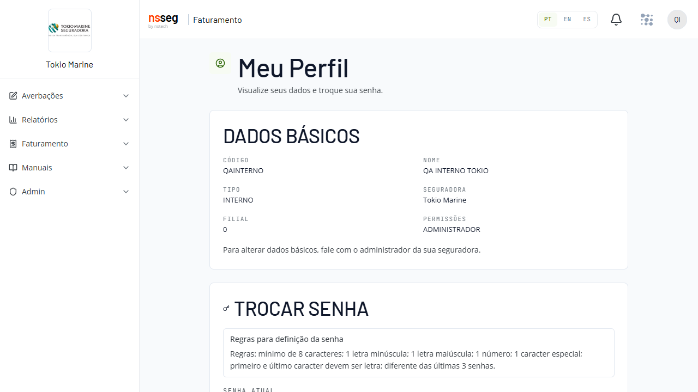
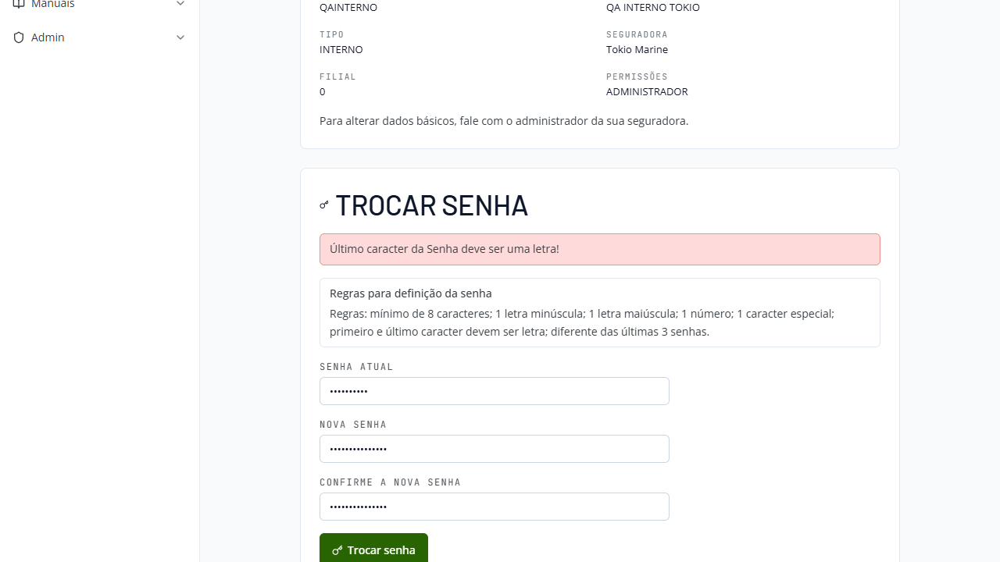

c_pwd_usu_v2/d_dia_exp → Msg 207 → HTTP 500 → texto genérico). Correção: escrita guardada por capability (formato legado em C_PWD_USU) + política por tenant lida do banco + mensagens do legado palavra por palavrahmlcitfaturamento.atmtec.com.br (tenant travado "Tokio Marine") + base smt-hom-citweb-tokioc_pwd_usu_v2 (hash novo) e
d_dia_exp, que não existem na base da Tokio (nem c_pwd_usu_v2 em nenhuma
das 33 bases de HML) → Msg 207 → HTTP 500 disfarçado de erro de validação. A correção guarda a
escrita por capability: onde a coluna nova não existe, grava no formato legado em
C_PWD_USU — a mesma coluna que o CITNET legado lê — com política de senha por tenant lida do
banco e as mensagens do legado palavra por palavra no lugar do texto genérico, além do painel
"Regras para definição da senha" na tela.
#QA-STATUS: AGUARDANDO_INFO de 26/08.
| CA | Critério | Origem |
|---|---|---|
| CA-1 | Usuário consegue trocar a senha com valor válido → mensagem exata do legado Alteração efetuada com sucesso. | Repro steps ("cenário desejado") + descrição |
| CA-2 | Senha fora da política é recusada com a mensagem específica da regra que faltou (palavra por palavra do legado) — nunca mais o genérico "Não foi possível trocar a senha". Regras portadas: mínimo de caracteres, maiúscula, minúscula, número, caracter especial, primeiro e último caracter = letra, histórico, uma troca por dia | Repro steps + descrição ("mensagens do legado") |
| CA-3 | Persistência no formato legado: C_PWD_USU = cifra da senha nova; C_PWD_CTL1 = cifra da senha antiga (rotação do histórico); D_CAD_USU = hoje + 3 meses; nenhuma coluna nova exigida (tokio segue com 17 colunas) | Descrição ("Dado gravado") |
| CA-4 | Login no CITNET novo com a senha nova funciona (o que foi gravado é verificável na volta) | Descrição ("invariante mais crítico") |
| CA-5 | Reutilizar senha do histórico é barrado: Senha já utilizada nos últimos 3 meses! | Descrição ("Como homologar") |
| CA-6 | Painel "Regras para definição da senha" na tela, alimentado pela política do próprio tenant (tokio = política padrão) | Descrição ("O que foi corrigido") |
| CA-7 | Regra "uma troca por dia" vigente (portada do legado) | Descrição (regras portadas) |
| CA-8 | Paridade cross-sistema: a senha trocada no novo loga também no CITNET legado (mesma coluna C_PWD_USU; gravar hash novo ali trancaria o usuário nos dois sistemas) | Descrição (causa raiz/correção) — guarda de QA |
Tokioteste@2026 foi recusada com a mensagem
específica (fix no ar — se voltar o texto genérico, é código velho/cache: dar hard refresh, o
index.html não tem Cache-Control).QAINTERNO, QACORRETOR; reserva QASEGURADO/QAASSESS).
A Tokio homologa o novo CITNET (RCV) e pediu usuários novos; ao tentar trocar a senha genérica, JORGE e
EDUARDO recebiam "Não foi possível trocar a senha" — sem indicação do motivo. O dev mediu as 33 bases
de HML: c_pwd_usu_v2 não existe em nenhuma e d_dia_exp falta em onze delas (tokio
incluída) — ou seja, troca de senha, reset pelo admin e criação de usuário estavam quebrados em todos os tenants;
a Tokio foi só a primeira a exercitar a tela. A correção entregue: escrita guardada por capability (formato
legado onde as colunas novas não existem), política de senha por seguradora lida do banco do tenant
(indicativo Ind_Formato_Senha_CitNet + tb_com_cit — existem só na família AXA;
as outras 29 bases usam a regra padrão), mensagens do legado palavra por palavra, painel de regras na tela e
erro de servidor deixando de se disfarçar de erro de validação.
Jornada navegada por clique no tenant Tokio com o usuário QAINTERNO: login → avatar →
Meu Perfil. Três mensagens capturadas com texto exato (nenhuma troca de senha foi efetivada — todos os
cenários abaixo são recusas, estado do banco intocado). O passo a passo completo ficou registrado em
features/CITNET/Usuarios/troca-senha-perfil.md.
| Cenário exercitado | Mensagem exata vista em tela |
|---|---|
Nova senha terminando em dígito (Tokioteste@2026 — a senha do ticket da Tokio) | Último caracter da Senha deve ser uma letra! |
| Confirmação diferente da nova senha | A nova Senha e a confirmação devem ser iguais |
| Senha atual incorreta | Usuário/Senha inválido! |
| Painel de regras do tenant tokio (política padrão) | Regras: mínimo de 8 caracteres; 1 letra minúscula; 1 letra maiúscula; 1 número; 1 caracter especial; primeiro e último caracter devem ser letra; diferente das últimas 3 senhas. |


| In scope | Out of scope (e por quê) |
|---|---|
|
• Troca de senha em Meu Perfil no tenant Tokio (CITNET novo): validações da política padrão com
mensagem específica por regra (CA-2) • Caminho feliz da troca + persistência no formato legado, conferida no banco (CA-1, CA-3) • Round-trip: login com a senha nova no CITNET novo (CA-4) • Histórico: reutilização de senha barrada (CA-5) e rotação C_PWD_CTL1..3• Regra "uma troca por dia" (CA-7) • Painel de regras com a política do tenant (CA-6) • Regressão cross-sistema: login no CITNET legado tokio com a senha trocada no novo (CA-8) |
• Rota de troca de senha expirada — não existe no novo (115 usuários AXA no beco); card próprio
registrado como pendência no #8337 • Criação/edição de usuário (Admin > Usuários) — mesma causa raiz, quebrada em 33/33 bases; card próprio (não usar como massa desta rodada) • Bloqueio de tentativas de login (AXA) — não implementado; card próprio • Política customizada da família AXA (mín 14/máx 20/42 dias/24 senhas) — regra de outro tenant; esta rodada é no tokio (política padrão). Regra de um tenant não se generaliza • Reset de senha pelo admin — depende da tela de Admin > Usuários (acima) • Medição das colunas em DEV e PROD — pendência registrada no card (medido apenas HML) |
| Item | Detalhe |
|---|---|
| 1. Ambiente CITNET novo (tenant Tokio) | Login (única URL direta permitida): https://hmlcitfaturamento.atmtec.com.br/login — campo "Ambiente" travado pelo host em Tokio Marine (cadeado, sem select). Botão "Entrar no nsseg". Após deploy, dar hard refresh (index sem Cache-Control). |
| 2. Ambiente CITNET legado (tenant Tokio) — só CT-SNH-011 | Login direto: https://tokio-hml-faturamento.nsseg.com.br/citnet/ (formulário Usuário/Senha, botão "Acessar"). Usado apenas para provar o login cross-sistema — nenhuma operação além do login/logout. |
| 3. Massa — usuários QA do tenant | QAINTERNO (grupos 1–4) e QACORRETOR (CT-SNH-010); reserva QASEGURADO/QAASSESS para re-execução no mesmo dia. Existência confirmada em banco em 28/08/2026 (tb_cit_net_usu, base tokio). Senhas atuais nas chaves HML_TOKIO_CITNET_*_USER/PASS do .env — nunca no plano. ⛔ JORGE/EDUARDO não são massa de QA (homologação do cliente). |
| 4. Acesso SQL read-only | Base smt-hom-citweb-tokio (credenciais no .env). Todas as consultas deste plano são SELECT (Q1–Q4 abaixo) — nenhuma escrita em banco é necessária: a massa são os usuários QA já existentes. |
| 5. Baseline antes do Grupo 2 | Executar Q1+Q3 e guardar o resultado (cifras truncadas nos registros públicos — hash não é segredo, mas evita ruído). |
smt-hom-citweb-tokio)
-- Q1: estado do usuário (antes/depois da troca)
SELECT C_USU, C_PWD_USU, C_PWD_CTL1, C_PWD_CTL2, C_PWD_CTL3,
CONVERT(varchar(19), D_CAD_USU, 120) AS D_CAD_USU
FROM tb_cit_net_usu WHERE C_USU = 'QAINTERNO';
-- Q2: contrato de schema (capability): 17 colunas; SEM c_pwd_usu_v2 e SEM d_dia_exp
SELECT COUNT(*) AS n_colunas FROM INFORMATION_SCHEMA.COLUMNS WHERE TABLE_NAME = 'TB_CIT_NET_USU';
SELECT COLUMN_NAME FROM INFORMATION_SCHEMA.COLUMNS
WHERE TABLE_NAME = 'TB_CIT_NET_USU' AND COLUMN_NAME IN ('c_pwd_usu_v2','d_dia_exp'); -- esperado: 0 linhas
-- Q3: histórico de senha (4 colunas; 0 linhas p/ QAINTERNO no baseline de 28/08)
SELECT c_usu, c_org_prd, CONVERT(varchar(19), d_usu_inc, 120) AS d_usu_inc, c_pwd_usu
FROM tb_hst_pwd_cit WHERE c_usu = 'QAINTERNO' ORDER BY d_usu_inc;
-- Q4: política custom inexistente no tokio (usa regra padrão)
SELECT TABLE_NAME FROM INFORMATION_SCHEMA.TABLES WHERE TABLE_NAME = 'tb_com_cit'; -- esperado: 0 linhas
SELECT COLUMN_NAME FROM INFORMATION_SCHEMA.COLUMNS WHERE COLUMN_NAME LIKE '%Formato_Senha%'; -- esperado: 0 linhas
Baseline medido em 28/08/2026: TB_CIT_NET_USU com 17 colunas
(sem c_pwd_usu_v2/d_dia_exp); tb_hst_pwd_cit com 0 linhas;
tb_com_cit inexistente — política padrão confirmada também pelo painel da tela.
Clique no cabeçalho de cada CT para expandir. Ordem de execução: Grupo 1 (não muta estado) → Grupo 2 (1 troca do QAINTERNO) → Grupo 3 → Grupo 4. Navegação sempre por clique: login → avatar do usuário (canto superior direito) → Meu Perfil. Toda recusa deve exibir a mensagem específica — se em qualquer CT aparecer o genérico "Não foi possível trocar a senha", o CT REPROVA (é a assinatura do bug original).
QAINTERNO, senha atual da chave .env. Nenhum destes CTs
efetiva troca — podem ser repetidos à vontade. Em todos: campo "Senha atual" correto (exceto CT-SNH-006), "Nova
senha" = "Confirme a nova senha" (exceto CT-SNH-005).Login OK no tenant Tokio com QAINTERNO; tela Meu Perfil aberta por clique (avatar → Meu Perfil).
.env).Tokioteste@2026 (exatamente a senha que a Tokio tentou usar no ticket).C_PWD_USU/D_CAD_USU não mudaram (troca não efetivada).Último caracter da Senha deve ser uma letra! — nunca o genérico
"Não foi possível trocar a senha". Banco intocado (Q1 idêntico ao baseline). Esta mensagem foi vista em tela na
verificação de planejamento de 28/08 — o CT formaliza a evidência da rodada.Mesmas do CT-SNH-001.
1Tokioteste@a (começa em dígito, resto conforme política).Mesmas do CT-SNH-001. Política padrão do tokio: mínimo 8 (painel).
Tk@26aa (7 caracteres — 1 abaixo do limite; cumpre as demais regras).Mesmas do CT-SNH-001.
tokioteste@2026a → Trocar senha → capturar alert.TOKIOTESTE@2026A → Trocar senha → capturar alert.Tokioteste@aa → Trocar senha → capturar alert.Tokioteste2026a → Trocar senha → capturar alert.Mesmas do CT-SNH-001.
Qateste@2026a; "Confirme a nova senha" = Qateste@2026b.A nova Senha e a confirmação devem ser iguais (vista em tela em
28/08). Banco intocado.Mesmas do CT-SNH-001. Card #8337 registra que bloqueio por tentativas não existe (pendência de card próprio) — ainda assim, executar uma única tentativa errada.
SenhaErrada@1x (valor sabidamente errado); "Nova senha" = "Confirme" = Qateste@2026a.Usuário/Senha inválido! (vista em tela em 28/08). Troca não
efetivada; conta não bloqueada.QAINTERNO. ⚠️ Consome a única troca do dia do usuário (CA-7). Executar Q1+Q3
imediatamente ANTES do CT-SNH-007 (baseline da rodada) e imediatamente DEPOIS (delta). A senha nova é definida na hora
da execução (mín. 8, começa e termina com letra, com maiúscula/minúscula/número/especial), registrada só no cofre local.Login OK com QAINTERNO (senha vigente); Q1+Q3 baseline capturados; nenhuma troca válida do QAINTERNO hoje.
C_PWD_USU mudou; C_PWD_CTL1 = valor ANTERIOR de C_PWD_USU (rotação); D_CAD_USU = data de hoje + 3 meses.tb_hst_pwd_cit — baseline 0 linhas).Alteração efetuada com sucesso. (frase idêntica à do legado — fonte:
card #8337). Banco: C_PWD_USU = cifra nova, C_PWD_CTL1 = cifra antiga, D_CAD_USU
= hoje + 3 meses, schema inalterado. "Não deu erro" não aprova — a assinatura é o delta do banco + a mensagem de sucesso.CT-SNH-007 aprovado (senha do QAINTERNO trocada nesta rodada).
QAINTERNO + senha ANTIGA → capturar a recusa.QAINTERNO + senha NOVA → home "Bem-vindo, QA INTERNO TOKIO".QAINTERNO (não muta — recusa). CT-SNH-010 usa o
QACORRETOR (consome a troca do dia DESTE usuário; senha atual na chave .env).CT-SNH-007 executado (senha antiga do QAINTERNO está no histórico/CTL1). Logado com a senha nova.
Senha já utilizada nos últimos 3 meses! (fonte: card #8337 — jornada
do dev na mesma tela/tenant). Banco intocado. Mesma jornada do roteiro "Como homologar" do card.Usuário QACORRETOR sem troca válida hoje (senha atual na chave .env).
QACORRETOR → Meu Perfil → troca válida nº 1 (senha nova conforme política, registrada no cofre local) → esperar Alteração efetuada com sucesso.C_PWD_USU trancaria o usuário no novo E no legado.CT-SNH-007 aprovado (QAINTERNO com senha nova gravada pelo CITNET novo).
https://tokio-hml-faturamento.nsseg.com.br/citnet/ (login direto do legado — URL de login permitida).QAINTERNO + a senha NOVA (trocada no CITNET novo) → "Acessar".C_PWD_USU) → REPROVADO com evidência.Logado no tenant Tokio (qualquer usuário QA); Q4 confirmando ausência de política custom.
tb_com_cit/indicativo → regra padrão).| Critério | Origem | CT(s) | Resultado |
|---|---|---|---|
| CA-1 — Troca válida com mensagem de sucesso do legado | Repro steps + descrição | CT-SNH-007 | Pendente |
| CA-2 — Recusa com mensagem específica por regra (nunca o genérico) | Repro steps + descrição | CT-SNH-001..006 | Pendente |
| CA-3 — Persistência no formato legado (C_PWD_USU/CTL1/D_CAD_USU; schema intacto) | Descrição | CT-SNH-007 | Pendente |
| CA-4 — Login com a senha nova (round-trip) | Descrição | CT-SNH-008 | Pendente |
| CA-5 — Histórico barra reutilização | Descrição | CT-SNH-009 | Pendente |
| CA-6 — Painel de regras com a política do tenant | Descrição | CT-SNH-012 (e visível em todos) | Pendente |
| CA-7 — Uma troca por dia | Descrição | CT-SNH-010 | Pendente |
| CA-8 — Paridade cross-sistema (legado loga com a senha do novo) | Causa raiz — guarda QA | CT-SNH-011 | Pendente |
Cobertura: 8/8 critérios derivados, com pelo menos 1 CT cada (100%). Sessão exploratória (NOR_QA_002 §11) prevista após os CTs formais — foco: caracteres fora do conjunto fechado do legado (acentos, espaço, emoji), colar senha longa (máximo da política padrão?), comportamento do painel/alerts em EN/ES (i18n citada na entrega), duplo clique no botão Trocar senha, sessão expirada no meio da troca.
| Risco | Probabilidade | Impacto | Mitigação |
|---|---|---|---|
| Regra "uma troca por dia" impede reteste do Grupo 2 no mesmo dia (usuário fica travado até o dia seguinte) | Alta (por design) | Médio | Um usuário QA por rodada de troca válida; reserva QASEGURADO/QAASSESS para re-execução; grupos que não mutam vêm primeiro |
| Trocar senha de usuário errado (JORGE/EDUARDO) quebraria a homologação da Tokio em curso | Baixa (guardado no plano) | Alto | Massa exclusiva QA*; warn-box; JORGE/EDUARDO citados apenas como contexto do ticket |
| Senhas novas da rodada se perderem (cofre local desatualizado) → usuários QA inacessíveis | Média | Médio | Registrar a senha final no cofre local (.env) imediatamente após cada troca; reset por procedimento privado é o fallback |
| Mensagens das regras ainda não vistas em tela (mínimo, composição, 1/dia) podem divergir do legado palavra a palavra | Média | Baixo | Texto exato capturado na execução vira oráculo registrado em features/CITNET/Usuarios/troca-senha-perfil.md; divergência de conteúdo (regra errada) reprova, divergência apenas tipográfica vira apontamento |
| Cache do front (index sem Cache-Control) mostrando tela velha após novo deploy durante a rodada | Média | Médio | Hard refresh antes de qualquer suspeita; assinatura do código velho = texto genérico no lugar da mensagem específica |
| Política padrão global: se outra família de tenant (AXA, mín 14) for exercitada por engano, os valores de massa deste plano não valem | Baixa | Baixo | Tenant travado pelo host (cadeado); plano restrito ao tokio; política AXA fora de escopo declarada |